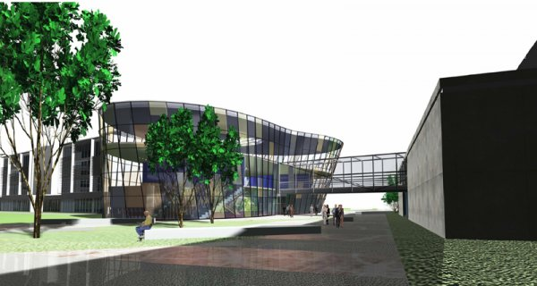
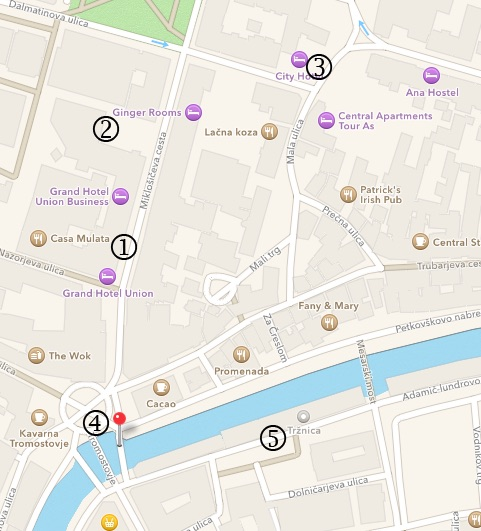
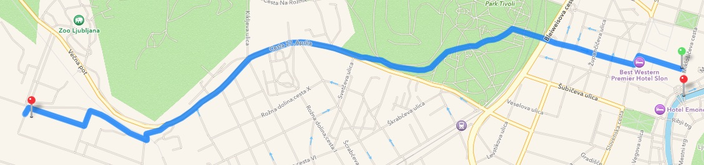

Background
Venue
Transport
Accommodation
Organisation
Program
Posters (PhD and PostDocs)
Registration
The closing meeting of the CARE-MI EU FP7 project will be held in Ljubljana, Slovenia, on Thursday, September 17, and Friday, September 18, 2015. The meeting will feature a summary of work done in CARE-MI workpackages, presentation of student posters, an open session with a set of CARE-MI and invited lectures, and a wrap-up by group leaders of the CARE-MI participants.
The meeting will take place at the Faculty of Computer and Information Science, University of Ljubljana, Večna pot 113, 1000 Ljubljana, Slovenia.

Ljubljana is one of the smallest European capitals and there are plenty hotels close to the center of the city that are also relatively close to the workshop venue. For this meeting, we recommend any of the following hotels (from the chain of Union Hotels), from which we will also organise the transport to and from the meeting venue:

Map legend: entrances to (1) Grand Hotel Union, (2) Grand Hotel Union Business, and (3) Central Hotel, (4) Three Bridges where we will meet for walking tour on Thursday, and (5) market place, a great place to stroll around if you are still in Ljubljana on Saturday.
Flying
You should fly to Ljubljana Airport, which has connections to most of European hubs. This is also the only Ljubljana airport.
From the airport to the hotel
From the airport take a taxi, shuttle or bus to the hotel in Ljubljana. The airport is about 25 kilometers to the center of the city, which takes about half-an-hour with a taxi.From the hotel to the meeting venue
Faculty of Computer Science, our meeting venue, is about 10 minutes with a car and 40 minutes walking from the city center. We will organize a transport from and to the hotels on:| Thu 8:10 | from an entrance of Grand Hotel Union to the venue (CARE-MI executive board members) |
| Thu 9:20 | from an entrance of Grand Hotel Union to the venue |
| Thu 17:15 | from the venue to the entrance of Grand Hotel Union |
| Fri 8:40 | from an entrance of Grand Hotel Union to the venue |
| Fri 14:20 | from an entrance of Grand Hotel Union to the venue |

On the figure above: for the toughest, there is a nice walk route from the city center to the venue, but takes about 40 minutes.
To travel on your own, you can either use a car, city public transport, or a taxi to reach the venue. Bus number 18 leaves close to the Hotels and goes directly to the venue (exit at the Zoo station).The meeting is locally organized by Jerca Tekavec, Jasna Bevk and Blaz Zupan. Please contact us at srd (at) fri (dot) uni-lj (dot) si for any questions regarding accomodation, transport or organisation.
Thursday, September 17, 2015
| Closed meeting by the executive board members. | |
| 8:30 | Executive board meeting |
General CARE-MI meeting with final reports by CARE-MI workpackages and workpackage leaders: a brief overview, main results, wrap-up. |
|
| 9:45 | Blaz Zupan: Welcome by the local organisers |
| 10:00 | (speaker tba, CNIC): Management and coordination of the consortium (WP1) |
| 10:15 | (speaker tba, CNIC): Dissemination and Exploitation (WP2) |
| 10:30 | (speaker tba, CTPX): Regulatory strategy (WP3) |
| 10:45 | (speaker tba, CTPX): Optimisation of cell isolation, production and storage (WP4) |
11:00 |
uroCoffee Break and Poster Session |
| 11:45 | (speaker tba, HLA-MED): Immunology of allogeneic CSC therapy (WP5) |
| 12:00 | (speaker tba, CCMIJU): Preclinical efficacy allogeneic CSC therapy in large animals (WP6) |
| 12:15 | (speaker tba, CTPX): Preclinical safety allogeneic CSC therapy (WP7) |
| 12:30 | (speaker tba, HVDH): Clinical trials allogeneic CSC therapy (WP8) |
| 12:45 | (speaker tba, OCTOPLUS): Formulation (WP9) |
| 13:00 | Lunch break |
| 14:30 | (speaker tba, CCMIJU): Preclinical efficacy factor therapy in large animals (WP10) |
| 14:45 | (speaker tba, CTPX): Preclinical safety factor therapy (WP11) |
| 15:00 | (speaker tba, KUL): Clinical trials factor therapy (WP12) |
| 15:15 | (speaker tba, CNIC): Advanced endogenous Cardiac Stem Cell biology (WP13) |
| 15:30 | (speaker tba, LJMU): Novel regeneration and maturation factors (WP14) |
| 15:45 | Coffee Break and Poster Session |
General Assembly and Social Activities |
|
| 16:30 | General Assembly |
| 17:15 | Transport to the Union Hotel |
| 19:00 | Guided tour of the old city (starts at the Three Bridges at the center of the city 200m away from Union Hotel, finishes at the restaurant) |
| 20:30 | Dinner |
Friday, September 18
| Open Session, general audience welcome | |
| 9:00 | Charles Kessler: Opening of the Open Session |
| 9:10 | Antonio Bernad: General introduction to cell therapy & cardiac cell therapy |
| 9:25 | Georgina Ellison: Cardiac stem cell biology |
| 9:40 | (speaker from INN tba): Encapsulated factors approach |
| 9:55 | Coffee break |
| 10:30 | Dominique Sharron: The allogeneic concept |
| 10:45 | Blaz Zupan: Biomedical data fusion |
| 11:00 | (invited speaker tba): (title tba) |
| 11:30 | Round table and closing of open session (participants tba) |
CARE-MI meeting (continued) |
|
| 12:00 | Lunch break |
Lessons learned, closing throughts and farewell by the group leaders (5 minutes each). |
|
| 13:00 |
(speaker tba), Fundación Centro Nacional de Investigaciones Cardiovasculares Carlos III (speaker tba), Coretherapix S.L. (speaker tba), Octoplus N.V. (speaker tba), Protein Production Services, Ltd. (speaker tba), Centro de Cirugía Minimamente Invasiva Jesús Usón (speaker tba), Instituto de Biologia Experimental e Tecnológica (speaker tba), Hospital Vall d'Hebron (speaker tba), Liverpool John Moores University (speaker tba), University Medical Center Goettingen (speaker tba), Philips Medical Systems, N.V. (Netherlands). (speaker tba), Philips Ibérica, S.A. (Spain) (speaker tba), Hôpital Saint Louis (speaker tba), Katholieke Universiteit Leuven (speaker tba), University of Ljubljana |
| 14:10 | Antonio Bernad: CARE-MI closing |
| 14:20 | Transport to the Union Hotel |
We encourage attending students and post-docs to prepare posters describing their own research work that is related to the topics of the meeting. All poster presenters will recive a special participation award from the local organiser.